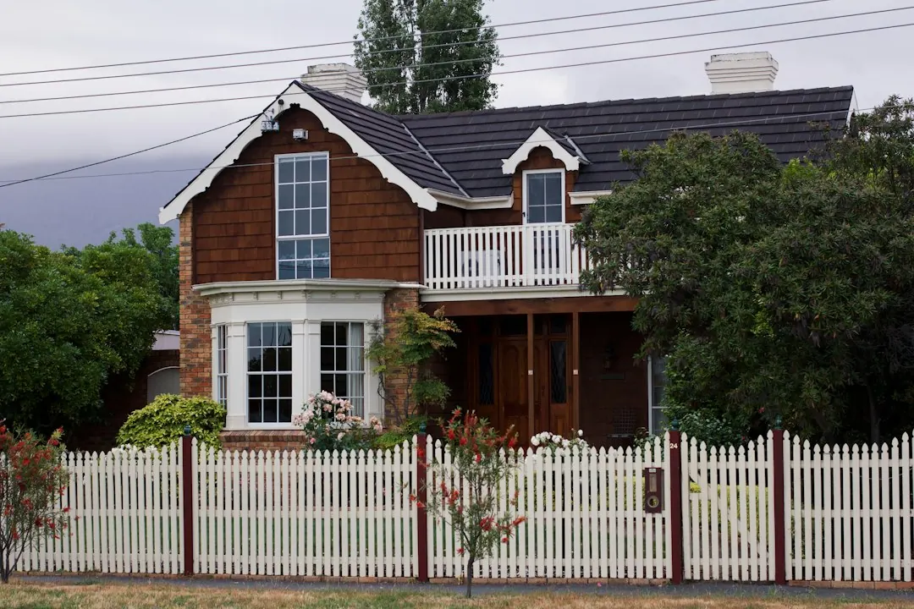

Retaining-wall decisions in Brisbane start with the ground being held, the level you want to create and how materials can reach the site. Boulder and sandstone walls suit different visual and garden outcomes, while concrete and timber sleepers use posts, connections and drainage that need to fit the job. Replacements also require removal, disposal and garden repairs to be discussed. Confirm access, drainage, approval questions, inclusions, exclusions, price and proposed timing before work begins.
For homeowners comparing retaining walls brisbane options, the practical choice depends on the ground to be retained, the space you want to create, access to the work area and the scope agreed before construction.
Retaining Walls Brisbane Explained
Boulder Walls Brisbane presents the decision as a question of what the wall needs to do, rather than a choice based only on its front-face appearance. A level lawn, raised garden bed, replacement wall or terraced garden can each create a different brief. Describe the height change, the ground above the wall and anything nearby, such as a driveway or another structure.
Natural boulders can create an irregular, planted-garden feel. Sandstone blocks offer either even rows or a rougher stone finish. Concrete and timber sleepers create a different system, with posts, connections and drainage to be considered alongside the finish. If the site is in South-East Queensland, the local conditions still need to be discussed at the property, not assumed from the suburb name alone.
- Explain whether the aim is a new level, a replacement or a more usable yard.
- Show the wall area, higher ground and the route from the street.
- Include approximate dimensions, access constraints and structures close to the wall.
Compare wall systems by the job they must perform
The visible face is only one part of the decision. A boulder wall may suit a natural garden setting, while sandstone can provide a more consistent block appearance. Sleeper systems need attention to the posts and connections, as well as the ground and drainage behind them. Timber may suit a garden edge where future care is part of the discussion. Concrete sleepers provide another system to compare where a more structured wall is being considered.
For an old or leaning wall, ask for the replacement scope to be separated into removal, disposal, drainage, rebuilding and repairs to affected garden areas. A proposal that describes only the new face may leave important work unclear. Retaining wall construction should be discussed with the actual site conditions, including whether materials can be moved through gates, steps, turns or other restricted routes.
Drainage, approvals and existing walls
Water behind a wall needs to be considered in its design. Ask what drainage the quote includes, where water is intended to go and whether the proposed outlet is lawful. Pooling, staining and soil loss are useful observations to report. Gaps between stones do not, by themselves, show that drainage is adequate.
Brisbane City Council lists conditions for work that may not need building approval, and height is only one consideration. Loads above the wall, nearby buildings or walls, and pool fencing can also affect the question. A licensed building certifier should check the full proposal before anyone treats it as exempt.
An existing wall cannot be fully assessed from a close photograph because buried footings and drainage may remain hidden. Photos can start the conversation, but a suitably qualified professional needs to explain what can be checked and whether removal or temporary support needs to be addressed if rebuilding is proposed.
Make the quote comparable
Before requesting a firm price, gather wider photos that show the wall, the higher ground and the access route. Note steps, narrow gates, sharp turns and overhead obstructions. A wide street does not guarantee a clear route behind the house, and access can affect how materials are moved.
Ask each proposal to identify who handles design, approval checks, construction and any necessary inspections. Confirm the material, approximate dimensions, drainage approach, removal and disposal requirements, protection of paths and repairs after the work. Inclusions and exclusions should be written down so that different proposals can be compared on the same scope.
- State what you want to retain and what garden features should remain.
- Describe any old wall, leaning section, pooling or visible soil loss.
- Ask what needs to be investigated before a final quote is given.
- Confirm price and when work can start only after the scope is clear.
Who this guide applies to
This guide is for Brisbane and nearby South-East Queensland property owners considering a new boulder, sandstone, concrete sleeper or timber sleeper wall, a replacement, or terraced garden levels. It also suits someone who has a clear visual preference but does not yet know which wall system fits the site.
It is less useful as a substitute for a site assessment where buried conditions, drainage, access, nearby structures or approval questions are unresolved. For another perspective on planning a local retaining-wall project, see this related retaining-wall planning guide.
When contacting a provider, give the suburb, the result you want, the wall type if known, access details and any plans already prepared. Availability, assessment arrangements and the final quote are confirmed separately.
- Describe the change. Say whether you need a new level, a replacement wall or a different way to use the yard.
- Show the whole site. Provide wider photos and approximate dimensions covering the wall, higher ground and route from the street.
- Discuss workable options. Confirm material choices, access and whether a site assessment is needed before expecting a firm quote.
- Confirm the proposal. Check the inclusions, exclusions, responsible parties, price and proposed start timing in writing.
| Option | Useful starting point | Questions to resolve |
|---|---|---|
| Boulder | Natural rock and a planted-garden feel | Can the site accept large stones, and is there room to build and drain behind them? |
| Sandstone | Even blocks or a rougher stone finish | Which face suits the garden levels, access and available space? |
| Concrete sleepers | Sleeper system between posts | Are the posts, connections, ground conditions and drainage suitable? |
| Timber sleepers | Garden-edge appearance with future care considered | What removal, drainage and ongoing care issues belong in the scope? |
Common questions
Does a retaining wall always need building approval in Brisbane? Not necessarily. Brisbane City Council lists conditions for work that may not need approval, but height is not the only consideration. Loads above the wall, nearby buildings or walls and pool fencing can matter, so a licensed building certifier should check the full proposal.
What should drainage questions cover? Ask what drainage is included, where water will go and whether the proposed outlet is lawful. Report pooling, staining or soil loss, and do not treat gaps between stones as proof that drainage is adequate.
Can an existing wall be assessed from photos? Photos are useful for starting a discussion, especially when they show the wider site and access route. They cannot reveal buried footings or drainage, so a suitably qualified professional should explain what can be assessed and whether rebuilding is required.
What should be included in a replacement-wall quote? Ask whether the scope includes removal and disposal of the old wall, drainage, construction, protection of paths and repairs to affected garden areas. Confirm who handles design, approval checks and any necessary inspections.
This guide covers material choices, site access, drainage, approval questions and quote preparation for retaining-wall projects in Brisbane and nearby South-East Queensland.